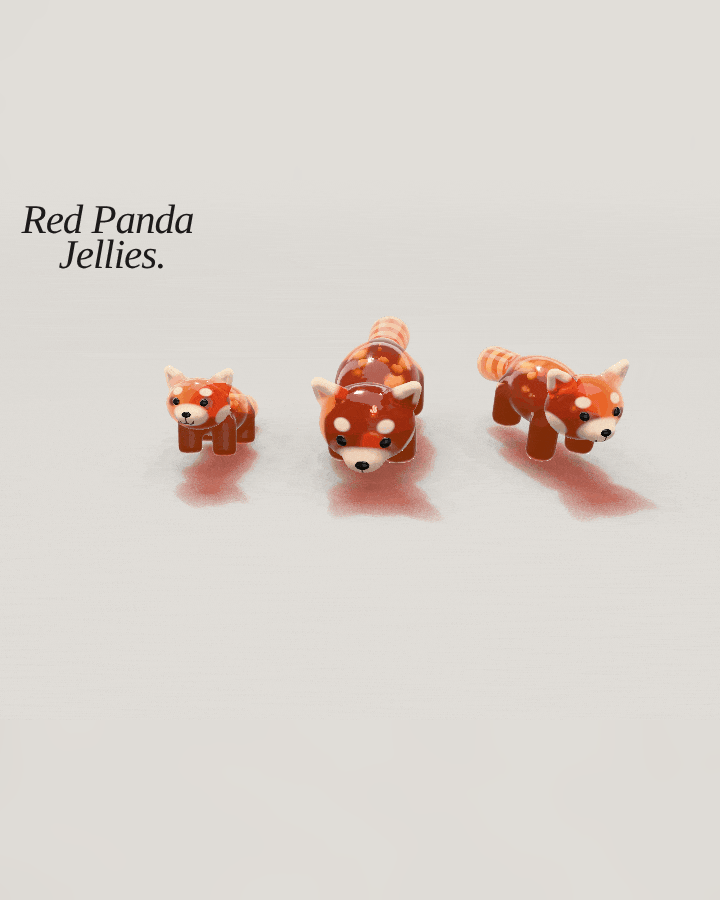
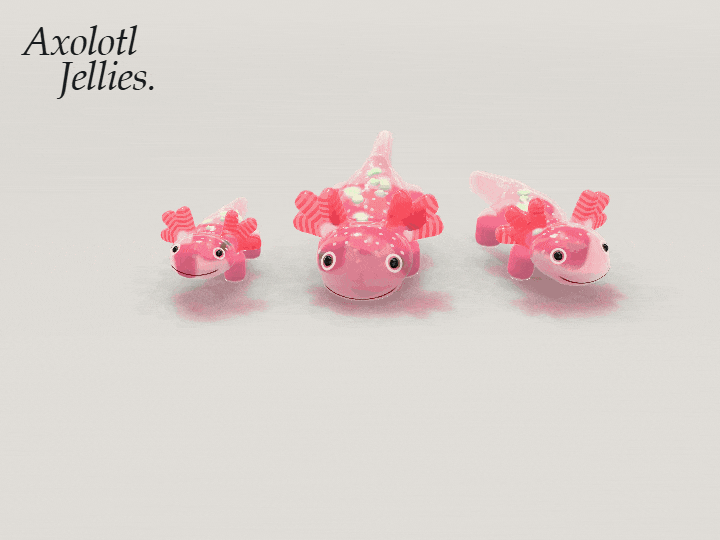
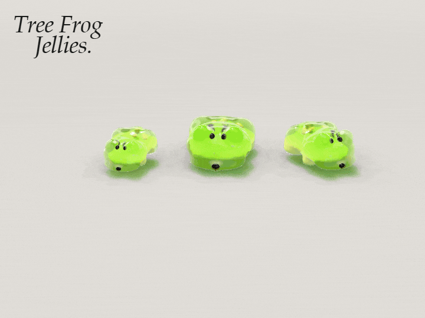
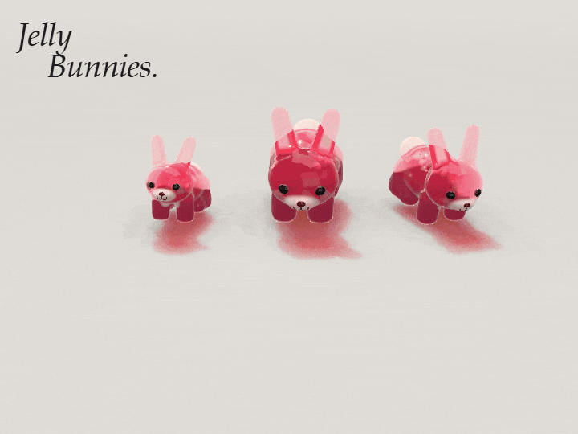
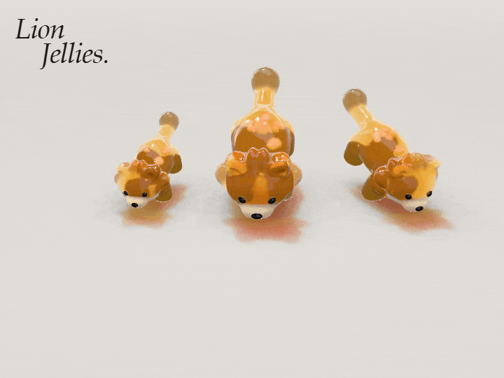
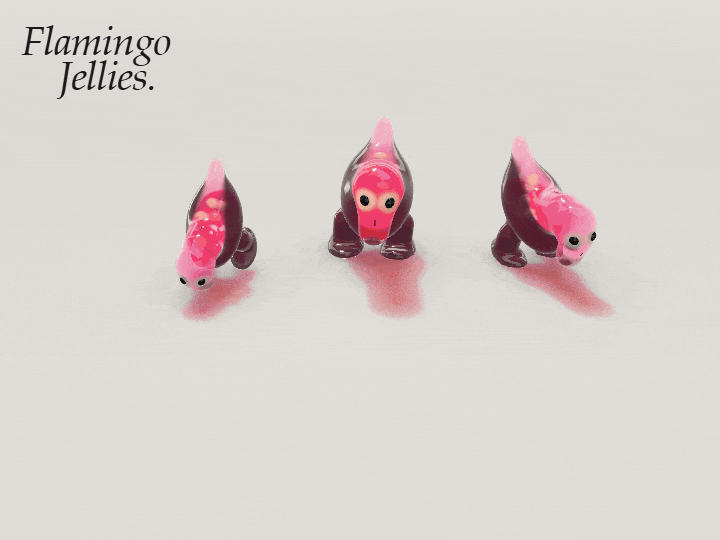
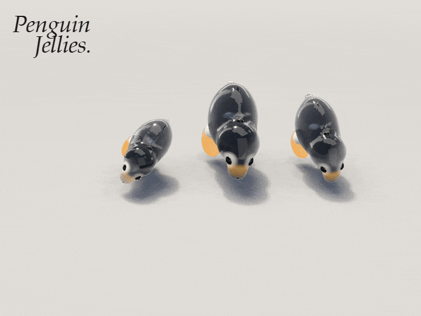
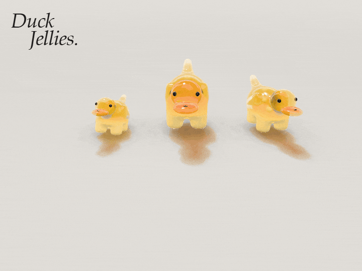

Jelly Animals.
Every model gets the same skill and the same engine, and is asked for an animal. 8 animals so far, filed by who made them.
Reference
What the kit builds before anyone touches it.
-

Red Panda Jellies
The reference build: what the kit produces as shipped, and what every other animal started from.
Claude Fable 5.2
models/claude-fable-5-2/
-

Axolotl Jellies
Clear pink with a fan of three red gills each side, a wide smile and a paddle tail. They scoot low, rear up to flick their gills, and eat pellets that glow green inside.
Claude Haiku 5.5
models/claude-haiku-5-5/
-

Tree Frog Jellies
Its own pick of animal. Lime, pond and blue-dart frogs that hop in short bursts, leap with a full turn in the air, and eat flies that glow inside.
Gemini Neon
models/gemini-neon/
-

Jelly Bunnies
Clear sakura pink in layered fruit jelly. They stand tall on their hind feet to periscope, and eat strawberries that glow inside.
Grokbot
models/grokbot/
-

Lion Jellies
A scalloped mane and a tufted tail, rearing up to roar, and meatballs that glow inside. Page only; no sources came with it.
hy3
models/hy3/
-

Flamingo Jellies
Pink over a dark wine belly, on two legs. They tuck their heads down to preen and eat shrimp that glow inside.
-

Penguin Jellies
Clear black over a pale belly. They waddle about, throw both flippers up to flap, and eat fish that glow inside.
Muse Wonder
models/muse-wonder/
-

Duck Jellies
Small quick hops, a stretch with wings half-spread to quack, and corn kernels that glow inside.